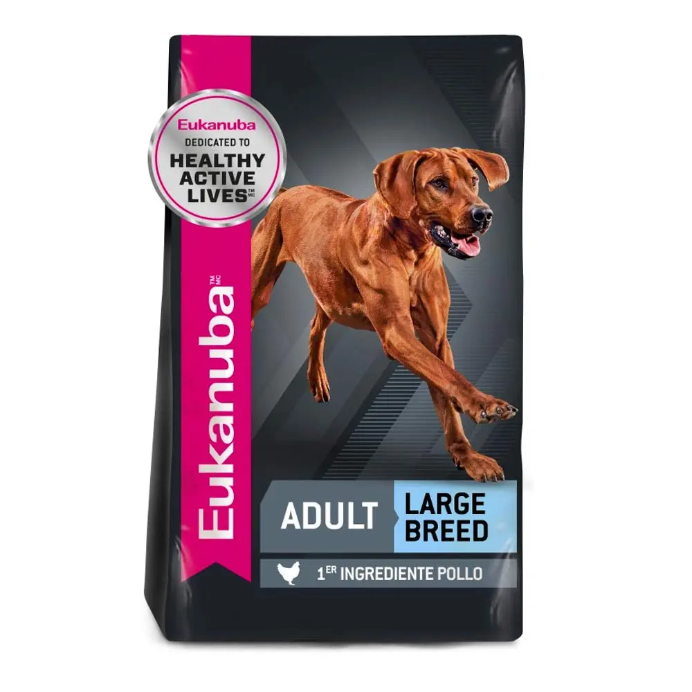

Proplan Adulto Complete

Descripción
Provee nutrición de avanzada que ayuda a los perros de razas medianas de 1 a 7 años de edad a mantenerse fuertes y llenos de vitalidad. Con carne de pollo como ingrediente #1, fuente de proteína de alto valor biológico y elevada digestibilidad que entrega un óptimo nivel de nutrientes de manera eficaz. Con Optihealth. Tecnología exclusiva compuesto por una mezcla de nutrientes que incluye spirulina, una microalga natural con beneficiosas propiedades para la salud general de los perros, cuya eficacia ha sido científicamente probada.
Royal Canin Maxi Adulto

Descripción
Royal Canin Maxi Adulto contribuye a una óptima digestibilidad y a mantener una piel saludable gracias a su fórmula enriquecida con ácidos grasos Omega 3 (EPA y DHA), y ayuda a mantener huesos y articulaciones saludables en perros de talla grande
Eukanuba Adulto Large
Descripción
Eukanuba Adult Large Breed alimento balanceado completo para perros adultos de más de 12 meses de edad en el caso de razas grandes o 24 meses para razas gigantes. Recomendado para perros adultos de : Labrador Retriever, Ovejero Alemán, Golden Retriever, Boyero de Berna, Cane Corso, Dogo de Burdeos, Bullmastiff y otras razas o perros mestizos que en su etapa adulta pesan más de 25 kg (razas grandes) o más de 50 kg (razas gigantes). Las fórmulas para adulto de EUKANUBA aseguran un nivel de glucosa en sangre adecuado y sostenido en el tiempo, y una digestión más prolongada gracias al balance especial entre diferentes tipos de granos. Además, estabilizan la secreción de Insulina, la cual a nivel del sistema nervioso central (SNC) produce sensación de saciedad sumado a su natural efecto fisiológico de “ingresar” la glucosa a las células y así proveerles su fuente de energía. Todo esto hace que el perro pueda mantener un nivel de actividad neurológica y física a lo largo de todo el día acompañándolo en un estilo de vida saludable.